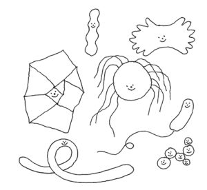
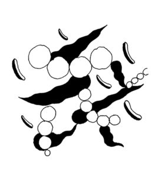
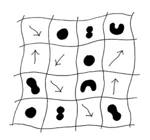
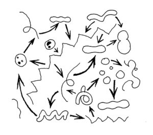
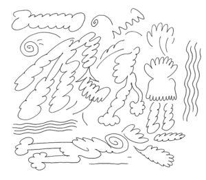

SCIENCEGROUND 1.5 – Microbi
Il programma di Scienceground 1.5 @ Festivaletteratura 2019, Mantova 4-8 Settembre. Tutti i riferimenti sono al programma del festival, scariabile su www.festivaletteratura.it.
Disegni di Andrea De Franco

UN TERRENO PER IL CONFRONTO SCIENTIFICO
a cura della Piccola Comunità Scientifica ExTemporanea
«Quando cerchi di osservare i microbi o i virus, finisci per trovare nessi che sono parte di quello che la gente chiama “società”. Sono due facce della stessa medaglia. Questo è il motivo per cui non è necessario uscire dalla scienza per spiegare i suoi aspetti sociali: bisogna entrare nelle varie discipline – e poi saranno le connessioni tra gli oggetti scientifici stessi a definire, per noi e voi, la società.»
Bruno Latour, intervista a Scienceground 2018
Se oggi dovessimo riedificare Palazzo Te e decidere a cosa dedicare le stanze, come affrescheremmo le sue pareti? Una sala la potremmo senz’altro dedicare ai microrganismi che popolano il nostro ambiente ed i nostri corpi – in numero addirittura maggiore delle nostre stesse cellule! Dunque, così come a Palazzo Te le sale sono dedicate a Giganti, Imprese e Metamorfosi, il Liceo Isabella d’Este ospiterà il SALONE DEI BATTERI, L’AULA DELLE MUFFE, L’ATRIO DEI LIEVITI, IL CHIOSTRO DEI VIRUS.
Per l’intera durata del festival ExTemporanea utilizzerà microscopi e libri, terreni di coltura e registratori vocali, per rendere fertile il terreno del confronto scientifico. I frutti attesi? Strumenti critici e condivisi, utili a dipanare la matassa dei luoghi comuni e delle semplificazioni eccessive e a rivelare le relazioni profonde tra l’incedere scientifico – con i suoi metodi, miti e controversie – ed il contesto sociale in cui la scienza si muove.
Ogni giornata si aprirà con le discussioni dei gruppi di lettura, alla ricerca di tracce microbiologiche tra le pagine dei libri (PAGG. 24, 45, 68, 123). I laboratori permetteranno di incontrare i microrganismi che popolano il mondo fuori e dentro di noi (EV. 1, 20, 29, 42, 83, 138, 157, 199), ma strumenti per “sentirli” saranno sempre a disposizione in un allestimento permanente. Ricercatori di caratura internazionale discuteranno le loro conoscenze sui temi della resistenza antibiotica, dell’accesso alla letteratura scientifica, dell’antropologia del microbo, etc. (PAGG. 11, 23, 43, 65). A fine giornata le contaminazioni con gli autori presenti al festival permetteranno di approfondire temi scientifici di rilevanza sociale (PAGG. 15, 34, 56, 111, 129).
Soprattutto, Scienceground è uno spazio aperto in cui scambiarsi fermenti di pasta madre e articoli specialistici, granuli di kefir e consigli di lettura. La comunità ExTemporanea che lo anima – composta da studenti, ricercatori, appassionati – si mette a disposizione dei partecipanti per farsi una cultura batterica e preparare una coltura scientifica.
Informazioni aggiornate su www.festivaletteratura.it e scienceground.it.
Con un biglietto giornaliero del costo di 2 euro è possibile partecipare a tutte le attività di Scienceground, ad eccezione dei laboratori numerati (per cui si rimanda alle indicazioni del programma).

Mercoledì 4 Settembre
15.00 > 20.00 LICEO “ISABELLA D’ESTE”
ingresso giornaliero € 2,00
SCIENCEGROUND 1.5 – MICROBI
Li mangiamo, ma non sappiamo che sapore abbiano. Li tocchiamo, ma non li vediamo. Sono parte integrante del nostro corpo e a stento ce ne rendiamo conto. Come percepirli allora? E come concepirli? A Scienceground sarà possibile ridurre la distanza tra la nostra società e quella dei microbi: ascoltandoli, osservandoli al microscopio, scambiandosi i lieviti del pane e consigli di lettura di articoli scientifici.
L’ingresso al percorso è compreso nel biglietto d’accesso giornaliero a Scienceground
15.00 LICEO “ISABELLA D’ESTE” € 8,00
ExTemporanea
QUANT’E’ PICCOLO IL MONDO! (E COME OSSERVARLO)
laboratorio di cucina microscopica
dai 5 ai 10 anni
Si dice che il batteriologo Robert Koch ebbe l’idea di crescere i batteri in agar osservando sua moglie preparare le gelatine di marmellata. La cucina non è l’unico luogo dove sviluppare strumenti di osservazione scientifica: in questo laboratorio familiarizzeremo con qualche strumento di laboratorio per studiare i gusti culinari dei microbi.
18.00 LICEO “ISABELLA D’ESTE” ingresso giornaliero € 2,00
ExTemporanea con Biblioteca d’Area di Bologna del CNR
ZEROUNIZZAZIONE
contaminazioni
Gli scienziati comunicano attraverso una forma di letteratura: articoli, monografie, forum specializzati, libri divulgativi. Ma come si legge un articolo scientifico? E dove si trova? Così come in passato ci siamo alfabetizzati per tenere il passo con i cambiamenti della società, i tempi sono maturi per diventare zerunizzati.
La comunità scientifica ExTemporanea contamina le sue attività invitando ospiti del Festival di diversa formazione a confrontarsi su tematiche di interesse scientifico e sociale. Sul sito del festival e su_ scienceground.it _verranno aggiornati i nomi dei partecipanti.L’ingresso alle contaminazioni è compreso nel biglietto d’accesso giornaliero a Scienceground
21:00 PIAZZA MANTEGNA ingresso libero
ExTemporanea e Biblioteca d’Area di Bologna del CNR
UN SEGNALE NEL RUMORE
lavagne – scienceground 1.5
La produzione, comunicazione e interpretazione dei risultati scientifici avvengono sotto enormi pressioni, spesso involontarie. L’anno scorso abbiamo chiuso il Festival parlando di storture statistiche: riprendiamo il filo del discorso partendo dal tema dell’accesso alla letteratura scientifica.

Giovedì 5 Settembre
20
9.30 LICEO “ISABELLA D’ESTE” € 8,00
ExTemporaneacon Cinzia Manicardi e Marco Bartoli
I MICRORGANISMI ATTORNO A NOI – LE ACQUE DEL RIO
laboratorio di ricerca ambientale
dai 14 anni
Nel 2003 il premio Ig Nobel è andato ad una ricercatrice che ha sbugiardato la regola secondo cui il cibo caduto a terra rimarrebbe incontaminato per cinque secondi. Acqua, suolo e aria sono pieni di microrganismi. Con l’aiuto degli studenti di alcuni istituti mantovani cercheremo di capire quali microbi popolano l’acqua e il terreno attorno a noi. In questo primo incontro pianificheremo uno studio ambientale cercando di capire di quali “microbi d’ambiente” andare alla ricerca e ci recheremo poi sul Rio di Mantova per fare prelievi, filtrazioni, ed analisi con sonda multiparametrica.
Laboratorio in tre appuntamenti (eventi 20, 83, 138). Gli appuntamenti sono indipendenti, ma è consigliata la partecipazione all’intero ciclo (biglietto cumulativo € 18,00).La durata di questa prima sessione del laboratorio è di circa 3h30′. In collaborazione con Fondazione Le Pescherie di Giulio Romano e Labter-Crea Rete di Scuole. Per maggiori informazioni scienceground@festivaletteratura.it
10.00 LICEO “ISABELLA D’ESTE” ingresso giornaliero € 2,00
GRUPPO DI LETTURA
Il dottor Semmelweis di L. F. Céline
a cura di ExTemporanea
Cosa pensereste di un medico che suona le maracas come pratica igienica prima di visitarvi? Beh, probabilmente le stesse cose che quasi due secoli fa passavano per la testa a pazienti e colleghi di Ignác Fülöp Semmelweis nel reparto di maternità dell’ospedale di Vienna. Cosa faceva lui di tanto strano? Si ostinava a lavarsi le mani ogni volta che metteva piede in sala parto! Ripercorreremo le osservazioni e i ragionamenti che hanno portato alla scoperta dei microbi attraverso una storia tragica, ma esemplare della complessità che caratterizza l’incedere della scienza. In vista delle giornate di settembre, ExTemporanea propone una serie di libri e articoli scientifici per preparare una discussione informata, che vedrà ogni giorno nello spazio di scienceground un momento di confronto aperto a tutti. Maggiori informazioni e materiali aggiornati alla pagina http://scienceground.it/category/bookclub, dove è possibile iniziare a scambiarsi le prime opinioni. L’ingresso ai gruppi di lettura è compreso nel biglietto d’accesso giornaliero a Scienceground
29
11.00 LICEO “ISABELLA D’ESTE” € 8,00
ExTemporanea
QUANT’E’ PICCOLO IL MONDO! (E COME OSSERVARLO) (VEDI 1)
laboratorio di cucina microscopica
dai 5 ai 10 anni
42
16.00 LICEO “ISABELLA D’ESTE” € 8,00
Marco Gobetti e Stefano Tonini
C’ERA UNA VOLTA IL PANE DEL FUTURO
laboratorio di lieviti e fermenti
dai 16 anni
Perché non basta immergere del pane in acqua per fare la birra? E il latte dimenticato in frigo è yogurt? Marco Gobbetti, professore presso l’Università di Bolzano, e lo studente di master Stefano Tonini, appassionato di fermentazioni, ci sveleranno alcuni dei segreti dei microbi che vivono in stabile simbiosi nel lievito naturale, e che ci offrono la possibilità di ottenere prodotti buoni e nutrienti. Mettendo le mani in pasta…
17.30 LICEO “ISABELLA D’ESTE” ingresso giornaliero € 2,00
ExTemporanea con Mattia Galeotti
MICROBI & BIG DATA
Come studiare l’influenza usando le statistiche di Wikipedia
contaminazioni
La scienza che studia le epidemie sta cambiando, anche grazie agli algoritmi di apprendimento automatico. Più in generale, informatica e microbi si contaminano in vari altri modi: virus che infettano i computer, algoritmi per comprendere meglio i microbi.

19:15 PIAZZA MANTEGNA ingresso libero
Mattia Galeotti
ANCHE GLI ALGORITMI HANNO PREGIUDIZI?
lavagne
La crescente diffusione di algoritmi di machine learning e procedure automatizzate nei più disparati settori della società è stata accompagnata negli ultimi anni da vari casi di discriminazione, in particolare per quanto riguarda razza, genere, affiliazione religiosa o orientamento sessuale. Per questo motivo il tema dell’equità algoritmica è diventato centrale, ma trovare una soluzione sembra essere un problema difficile…
Le lavagne sono i fascicoli di una libera enciclopedia universale da raccogliere da un’edizione del Festival all’altra. Le lezioni tenute quest’anno all’aria aperta da esperti e ricercatori riguardano in particolare gli algoritmi e la tattica sportiva, ma non mancano incursioni in altre discipline e nei temi di riflessione di Scienceground 1.5.
Venerdì 6 Settembre
10.00 LICEO “ISABELLA D’ESTE” ingresso giornaliero € 2,00
GRUPPO DI LETTURA
Spillover di David Quammen
a cura di ExTemporanea
Con il termine “spillover” si indica il preciso momento in cui un patogeno, virus o batterio, compie il salto evolutivo da una specie all’altra. Si tratta di un evento ben localizzato nel tempo: una combinazione tra casualità e l’affacciarsi di un’occasione. Tramite la penna esperta di David Quammen seguiremo le tracce di questi eventi primordiali attraverso le foreste del Camerun e i mercati della Cina meridionale, i templi delle scimmie del Bangladesh e le praterie dell’Australia, arrivando a fare i conti prima di tutto con noi stessi, perché la storia delle pandemie parla di noi più di quanto immaginiamo.
83
11.00 LICEO “ISABELLA D’ESTE” € 8,00
ExTemporanea con Cinzia Manicardi e Marco Bartoli
I MICRORGANISMI ATTORNO A NOI – LE ACQUE DEL RIO
laboratorio di ricerca ambientale
dai 14 anni
L’ambiente che ci circonda è ricco di microrganismi. Dopo aver raccolto le acque del Rio di Mantova e messo in incubazione i microbi, possiamo ora vedere cos’è cresciuto durante la notte e interpretare i primi risultati.
18.00 LICEO “ISABELLA D’ESTE” ingresso giornaliero € 2,00
Telmo Pievani con ExTemporanea
MICROBI ED EVOLUZIONE
contaminazioni
Pur mantenendo solidi i suoi pilastri concettuali, la teoria dell’evoluzione di Darwin ha subito e continua a subire continui rinnovamenti alla luce delle scoperte sempre più avanzate delle varie branche della biologia.

Sabato 7 Settembre
10.00 LICEO “ISABELLA D’ESTE” ingresso giornaliero € 2,00
GRUPPO DI LETTURA
Microbes and Other Shamanic Beings di C. Giraldo Herrera
a cura di ExTemporanea
Sin dai tempi del “contatto” – quando i primi missionari incontrarono i nativi dopo la “scoperta” delle Americhe – gli occidentali hanno usato paradigmi diversi per analizzare il complesso rapporto tra le popolazioni autoctone e la natura: la religione cristiana, la psicoanalisi, l’antropologia. Cosa può dirci il concetto di microbioma, e come possiamo riflettere queste conoscenze sul nostro modo di concepire il rapporto con la natura?
11:00 PIAZZA MANTEGNA ingresso libero
Angelo Pan
PREVENIRE LE INFEZIONI RESISTENTI AGLI ANTIBIOTICI
lavagne – scienceground 1.5
La medicina come la conosciamo oggi potrebbe essere a repentaglio per lo sviluppo di germi multiresistenti. Per salvaguardarla è necessario un uso attento degli antibiotici e l’organizzazione di servizi specifici per il monitoraggio delle criticità.
138
11.00 LICEO “ISABELLA D’ESTE” € 8,00
ExTemporanea con Cinzia Manicardi e Marco Bartoli
I MICRORGANISMI ATTORNO A NOI – MICROBI COME PAROLE
laboratorio di ricerca ambientale
dai 14 anni
L’ambiente che ci circonda è ricco di microrganismi. Ieri abbiamo analizzato le acque del Rio di Mantova e abbiamo fatto delle considerazioni. Per costruire una comunità scientifica, bisogna presentare e condividere dati e risultati! Tra le forme che gli scienziati usano per comunicare ci sono i poster, gli articoli… per informazioni generali sul laboratorio vedi 20
155
16:00 AULA MAGNA DELL’UNIVERSITA’ € 6,00
Sally C. Davies con Angelo Pan
VERSO LA FINE DELLE MEDICINE?
Quando la massima autorità medica d’Inghilterra avverte che le medicine non funzionano più, è il momento di drizzare le orecchie. Cos’è cambiato dalla scoperta della penicillina, che aveva rivoluzionato la medicina nel XX secolo? I risultati dell’indagine di Sally C. Davies – prima donna nel ruolo di Chief Medical Officer e autrice di Quando le medicine non funzionano – parlano chiaro: i microbi contrattaccano, resistono ai farmaci con cui vorremmo neutralizzarli in maniera tanto più vigorosa quanto più irresponsabilmente abusiamo delle medicine. Si tratta già di una vera e propria minaccia globale, al pari del cambiamento climatico, che ha effetti sulla vita quotidiana di chi sfortunatamente contrae le infezioni multiresistenti, spesso proprio all’interno delle strutture ospedaliere. Dialoga con lei Angelo Pan, direttore del dipartimento di malattie infettive presso l’A.S.S.T di Cremona.
L’autrice parlerà in inglese. Interpretazione consecutiva in italiano
157
16.00 LICEO “ISABELLA D’ESTE” € 8,00
Barbara Zambelli con ExTemporanea
MICROBI OPERAI: QUANDO I MICRORGANISMI VANNO IN FABBRICA
laboratorio di biotecnologie
dai 16 anni
Nella seconda metà dell’Ottocento, con la rivoluzione industriale, si scoprono operai anche nel mondo microscopico. Gli studi di Pasteur su processi di fermentazione in uso da millenni aprono le porte alla manipolazione di geni ed enzimi: nascono le biotecnologie moderne. In questo laboratorio vedrete come anche nei batteri ci sono le catene di montaggio, e come possiamo provare a sfruttarli per diverse applicazioni, non senza il rischio di creare conflitti sociali. O meglio, microbiali.
18.00 LICEO “ISABELLA D’ESTE” ingresso giornaliero € 2,00
Gianfranco Pacchioni con ExTemporanea
L’INFLAZIONE DELLA VERITÀ SCIENTIFICA
contaminazioni
Mentre la produzione di articoli scientifici raggiunge numeri ormai insostenibili, le grandi case editrici premono sulle organizzazioni internazionali per promuovere un nuovo modello di pubblicazione della letteratura specializzata. Ma l’open access è veramente aperto?
21:00 PIAZZA MANTEGNA ingresso libero
Maria Paola Landini
RESISTENZA AGLI ANTIBIOTICI: STRUTTURARE LA SANITÀ
lavagne – scienceground 1.5
La medicina occidentale potrebbe essere a repentaglio per lo sviluppo di germi multiresistenti. Come si stanno strutturando le aziende ospedaliere a fronte del grave problema delle multiresistenze? E come possono aiutare i cittadini?

Domenica 8 Settembre
10.00 LICEO “ISABELLA D’ESTE” ingresso giornaliero € 2,00
GRUPPO DI LETTURA
Quando le medicine non funzionano di Sally C. Davies
a cura di ExTemporanea
Mrs Xu viene internata in ospedale dopo aver contratto un mal di gola alla festa di compleanno del figlio. Non sa se uscirà e vedrà ancora la sua famiglia. Mrs Xu non è un personaggio di fantascienza: potremmo essere tutti noi tra trent’anni, quando non ci saranno più antibiotici efficaci anche contro le infezioni più comuni. La resistenza antibiotica sta diventando un problema sempre più grave, anche nei nostri ospedali. Ma non è ancora troppo tardi. Sally C. Davies, già Chief Medical Officer nel Regno Unito, delinea nel suo libro alcune strategie da mettere in atto fin da subito, nella ricerca e nella pratica quotidiana, per affrontare il problema.
11:00 PIAZZA MANTEGNA ingresso libero
Lynn Chiu
MICROBES: GOOD AND/OR EVIL
lavagne – scienceground 1.5
Just a few years ago microbes were feared in the public discourse (you better wash your hands for thirty seconds!), but infections were reasonably under control. Now everybody likes them (you better eat probiotic yogurt to enhance your gut microbiome!), but multiresistant strands threaten Western medicine as we know it. L’incontro si terrà in inglese senza interpretazione.
14.30 LICEO “ISABELLA D’ESTE” ingresso giornaliero € 2,00
ExTemporanea
RIUNIONE CONCLUSIVA DI SCIENCEGROUND
contaminazioni
“Quando ho iniziato a studiarli sono stato accusato di criticare gli scienziati perché descrivevo come lavoravano, e questa era vista come una critica. Ma quarant’anni più tardi il solo modo di difendere la scienza è precisamente questo”. Queste alcune delle parole con cui, un anno fa, Bruno Latour contribuì alla riunione conclusiva di Scienceground. A porte aperte, discutiamo di come è andato Scienceground 1.5 e lanciamo qualche idea per la realizzazione di Scienceground 1.6666666…
219
17:00 SEMINARIO VESCOVILE € 6,00
César E. Giraldo Herrera con Paulo Fernando Lévano
MICROBI, NON SPIRITI
“Queste entità sono in relazione con la malattia, sono patogene. Richiedono nutrimento, crescono, maturano, ed invecchiano; si riproducono prolificamente”. Questa frase si adatta bene ai microbi, la cui presenza mortifera era stata dapprima percepita negli ospedali piagati dalla febbre che nei primi decenni dell’Ottocento falcidiava le puerpere, per poi diventare germi visibili con Louis Pasteur e il microscopio. È invece la descrizione del complesso sistema di esperienze sensoriali che gli sciamani delle culture amerindie associano alle loro pratiche mediche, e che sono state finora tradotte come “spiriti”. L’antropologo e biologo César E. Giraldo Herrera, ricercatore affiliato presso l’Università di Oxford, sfida le interpretazioni animistiche, argomentando che una traduzione migliore nel vocabolario occidentale, rispettosa dell’empirismo che caratterizza il rapporto stretto con la natura delle popolazioni native, è quella di “microbi”. Dialoga con lui il filosofo Paulo Fernando Lévano, ricercatore e portavoce dei percorsi della piccola comunità scientifica ExTemporanea. L’autore parlerà in inglese. Interpretazione consecutiva in italiano.